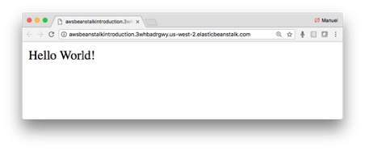

Hosting a Flask Application on AWS Beanstalk
Practical walkthroughs on machine learning, data exploration and finding insight.

Resources
1 - Get an Account on Amazon AWS
Amazon AWS offers an “AWS Free Tier” account that allows you to try
some of its services for free. For more information on creating an account, go
to: https://aws.amazon.com/free/
2 - Download Source Files
Create a folder named “serverless-hosting-on-amazon-aws”, and two files. One “application.py” and another “requirements.txt”
application.py
from flask import Flask
application = Flask(__name__)
@application.route("/")
def hello():
return "Hello World!"
if __name__ == '__main__':
application.run()
requirements.txt
flask
The folder structure should look like:
serverless-hosting-on-amazon
├── application.py
└── requirements.txt
3 - Install Supporting Tools and Libraries
Start A Virtual Environment Session
This isn’t an obligation but will help you keeps things clean and neat
by segregating this environment from the rest of your machine (google “venv” for Python
3).
$ python3 -m venv beanstalk_demo
$ source beanstalk_demo/bin/activate
Install Flask
Install Flask using “pip3
install” or however you normally install Python libraries on your operating
system. This will help you get the latest version of Flask and also run the
application locally (which we already did in an earlier section).
$ pip3 install Flask
4 - Create an Access Account for Elastic Beanstalk
Log into AWS web console and go to the Identity and Access Management
(IAM) console. A quick way there is to simply type 'IAM' in the AWS services
search box on the landing page. Select “Users”
in the navigation section and click the “Add
user” button.

Select a user name - here we enter “ebuser” and check “Access type: Programmatic access”.

Click on the blue “Next: Permissions” button. This will take you to the “Set permissions” page, click on the “Add user to group” large menu button then click on “Create group”. Create a group name, “ebadmins” in this case and assign it the policy name “WSElasticBeanstalkFullAccess”. Then click on the “Create group” button to finalize the group.

Click on the “Next: review” blue button and, on the following page, click on the blue “Create user” button

Once you see the “Success” message, this means you have successfully created the “ebuser” account. Make sure you download the “.csv” file to your local machine by clicking on the “Download .csv” button. This file is important as it holds your key and secret code. Store it in a known location on your local machine as you will need that information to connect and Secure Shell (SSH) into your EB (we won’t need SSH in this section but will in subsequent ones).
5 - Install Elastic Beanstalk (EB)
Install the “awsebcli”
library to interact and manage our EB service on AWS. For mac and linux users (if it complains about the 'user' parameter,
try without it):
$ pip3 install awscli
$
pip3 install awsebcli
For windows (if it complains about the 'user' parameter, try without
it):
$ pip3 install awscli --user
$ pip3 install awsebcli --user
6: Eb Command Line Interface
Its’ time to initialize the Elastic Bean interface:
$ eb init -i
This will ask you a series of questions and you can go with most of
the defaults. Under “Enter Application
name” enter “AWSBeanstalkIntroduction”.

If this is your first time running AWS on your computer, it will ask
for your credentials. Open the “credentials.csv” that was downloaded on your
machine when you created a user and enter the two fields required.

Go with the Python defaults (it needs to be a 3.x version), ignore
warnings, and say yes setting up SSH.

Create a new KeyPair or select an existing one and keep going with the defaults. If you create a new key-pair, it will save it in a folder and tell you the location.

Next you need to create your EB (use a unique name). This will zip up
the data and upload it to the AWS cloud:
$ eb create AWSBeanstalkIntroduction
7 - Take if for a Spin
It takes a few minutes and you should get a success message if all
goes well. Then you can simply use the “eb open” command
to view the web application live.
$ eb open AWSBeanstalkIntroduction
It may take a little bit of time to run the application the first time around and may even timeout. Run the “eb open” one more time if it times out.

If things don’t go as planned, check out the logs for any error
messages.
eb logs
8: Don't Forget to Turn It Off!
Finally, we need to terminate the beanstalk instance as not to incur
additional charges. This is an important reminder that most of these cloud
services are not free. It will ask you to enter the name of the environment, in
my case it is “AWSBeanstalkIntroduction”.
eb terminate AWSBeanstalkIntroduction
It is a good idea to double check on your AWS dashboard that all services are indeed turned off. This is easy to do, simply log into your AWS account at https://aws.amazon.com/ and make sure that your EC2 and Elastic Beanstalk accounts don’t have any active services you didn’t plan on having.

It does take a few minutes but will take the site down. And terminate
your virtual environment on your local machine.
$ deactivate amazon_aws_intro
For more information see:
https://docs.aws.amazon.com/elasticbeanstalk/latest/dg/create-deploy-python-flask.html